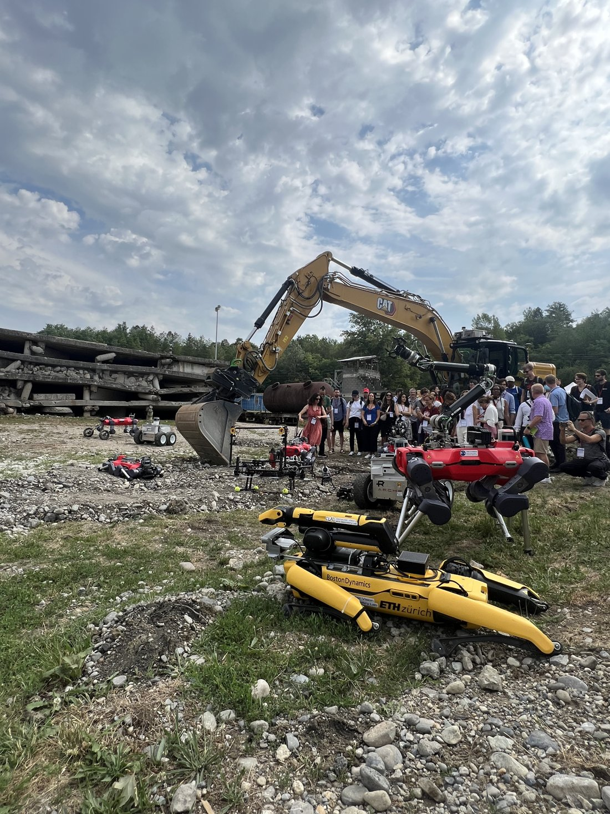
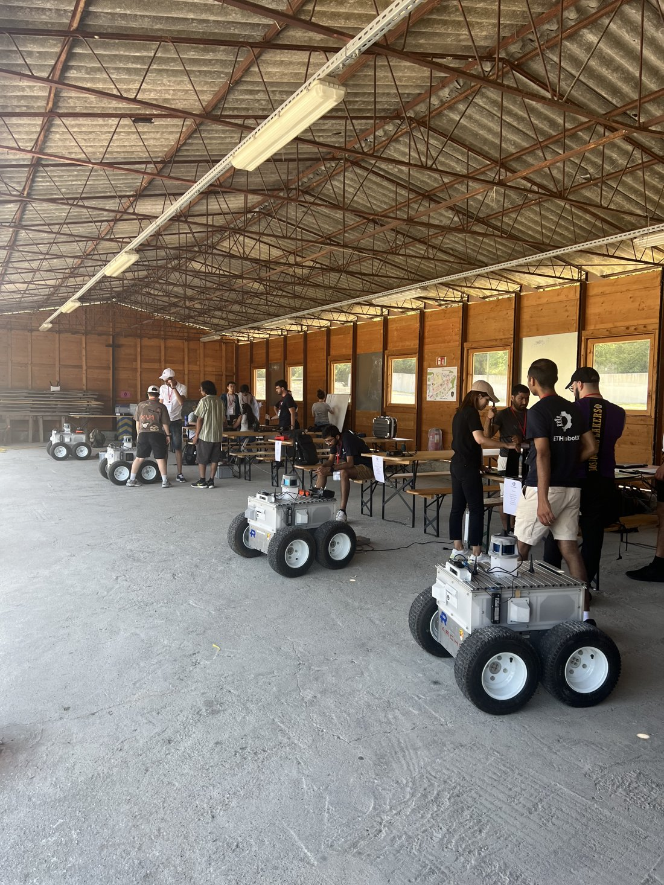

|
I was a participant of the ETH Robotics Summer School 2023. This program immersed me in the world of robotics like never before. I dove deep into topics like state estimation, SLAM, path planning, trajectory optimization, and camera modeling. The highlight? Programming (semi-)autonomous rough-terrain UGVs and successfully competing in the search and rescue challenge. A special shoutout to my incredible team – we burned the midnight oil, and the 'Eureka' moments were unforgettable.   P/S: You may see a picture of me falling sleep on the table. It was 4 am :)). |